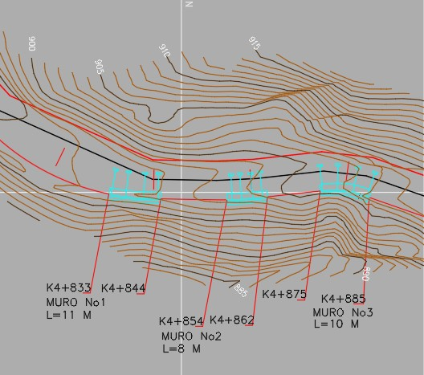
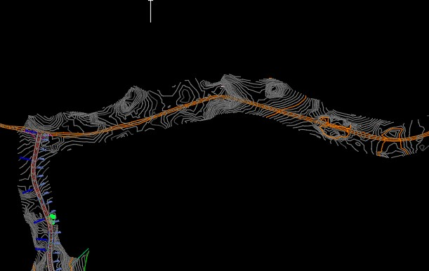

Servicios

Topografia
Levantamientos topográficos de corredores para las diferentes opciones de alineamientos

Diseño de vías
Diseño de vía, alineamientos, secciones transversales, perfiles, obras especiales, drenajes, pontones, utilizando software especializado

Geotecnia
Verificación en los corredores viales de los aspectos geotécnicos, para establecimiento de obras de protección
Verificación Ambiental
Verificación ambiental en cada uno de los corredores viales, para verificar inconvenientes de construcción y como se pueden remediar